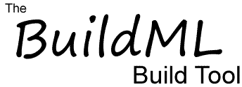
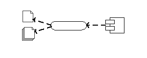

|

About the BuildML ToolBuildML is short for Build Modeling Language. The goal of this project is to move the technology behind software build tools to the next level. First generation build tools, such as GNU Make, are challenging to use effectively, with organizations wasting hundreds or thousands of hours (sometimes costing millions of dollars) due to build-related problems. Second generation build tools, such as Apache Ant, CMake, and SCons solve many of these problems, but still don't allow the software build process to be visualized at the 10,000 foot level. The BuildML project is intended to make the compilation of software much simpler, without requiring developers to have expert knowledge about the build tool. The tool should be easy to use by junior software engineers through to engineering managers who haven't written code in many years. Based on the success of UML (the Unified Modeling Language), BuildML uses a graphical representation to help users understand and execute the build process. Please Note: As an open source project, the BuildML build tool will be constructed and refined over a number of years. The project was started in 2011, but is not expected to be a polished product for several more years. If you're interested in getting involved in BuildML's development, please contact us at contact@buildml.com. Software Downloads
User DocumentationDeveloper ResourcesThe following resources will only be of interest to people who want to understand the internals of BuildML. None of this information is useful for people who simply want to use the tool.
|